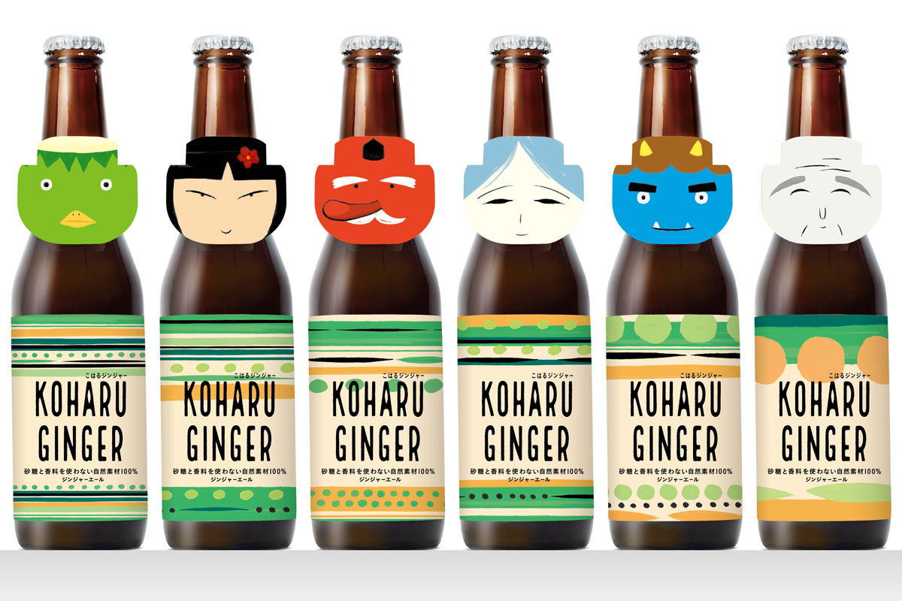
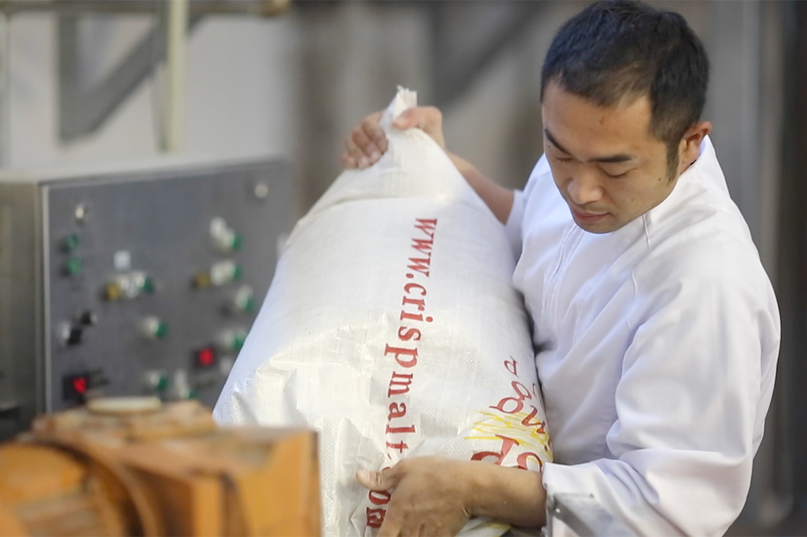
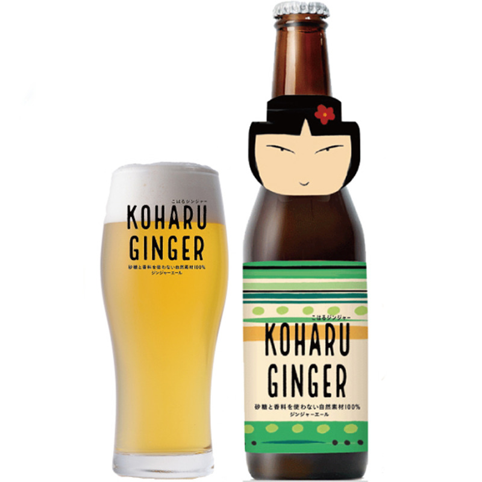

Префектура Иватэ · Итиносэки · напитки
KOHARU GINGER: имбирный лимонад без сахара от старой сакэварни Итиносэки

Старая сакэварня из Итиносэки, на юге префектуры Иватэ, в 2021 году выпустила имбирный лимонад. Сахара в нём нет вовсе: сладость ему даёт ячмень местного сорта.
Сакэварня
«Сэкиноити»: сакэ, пиво и джин
Сакэварню «Сэкиноити» основали в 1918 году в Итиносэки, городе на юге префектуры Иватэ. Название ей дал принц из ветви императорской семьи Канъин: оно должно было напоминать, что здесь стремятся варить лучшее сакэ, от которого людям становится радостно.
В 1986 году производство сакэ сократили и перенесли, а в опустевших старых складах, «кура», открыли ресторан местной кухни и магазин при сакэварне. Так «Сэкиноити» стала сакэварней, куда приезжают путешественники. В 1995 году здесь запустили собственное пиво Iwate Kura Beer. Среди японских крафтовых пивоварен оно первым получило золотую медаль Monde Selection, а потом и награду World Beer Cup. Пивоварня небольшая, но к 2021 году её пиво продавали не только по всей Японии, но и за границей.
Великое восточно-японское землетрясение 2011 года сильно ударило по сакэварне, но поклонники и жители округи помогли ей выстоять. В 2020 году, когда из-за коронавируса в стране не хватало антисептика, здесь перегнали пиво и сакэ и сделали дезинфицирующее средство «Амабиэ 65». Освоенную перегонку затем пустили в дело: так появился крафтовый джин SEIAN.
Напиток
Лимонад на ячмене «Кохару»

KOHARU GINGER варят совсем без сахара. Сладость дают зёрна двурядного ячменя «Кохару», который растёт в окрестностях: для сакэварни такое сырьё редкость. Кроме имбиря в него кладут кардамон, чёрный перец и другие пряности. Вкус и аромат мягкие, поэтому лимонад спокойно можно давать детям.
Технология взята из крафтового пивоварения: пивовары умеют работать с пряностями, и этот опыт помог собрать аромат напитка. Солод обжаривают при высокой температуре, и от его шелухи лимонад получает золотой цвет и глубокий вкус. Получается что-то знакомое с детства и одновременно новое.

Этикетка
Каппа, тэнгу и снежная дева
В Иватэ испокон веку рассказывают предания о духах и ёкаях, и для этикетки выбрали шестерых из них. Это водяной каппа, домашний дух дзасики-вараси, снежная дева юки-онна, тэнгу, синий демон аоони и морской слепец уми-дзато. У каждого своё лицо и свой узор на «туловище» бутылки. Ёкаев и богов в Иватэ всегда описывали как часть природы, поэтому набор из шести бутылок выглядит очень по-местному и его приятно просто разглядывать.
Сакэварня «Сэкиноити»
- Адрес
- префектура Иватэ, Итиносэки, Тамура-тё, 5-42
- Телефон
- +81 191-21-1144
- Цены / Вход
- KOHARU GINGER, 495 иен с налогом за бутылку 330 мл
- Сайт
- sekinoichi.co.jp